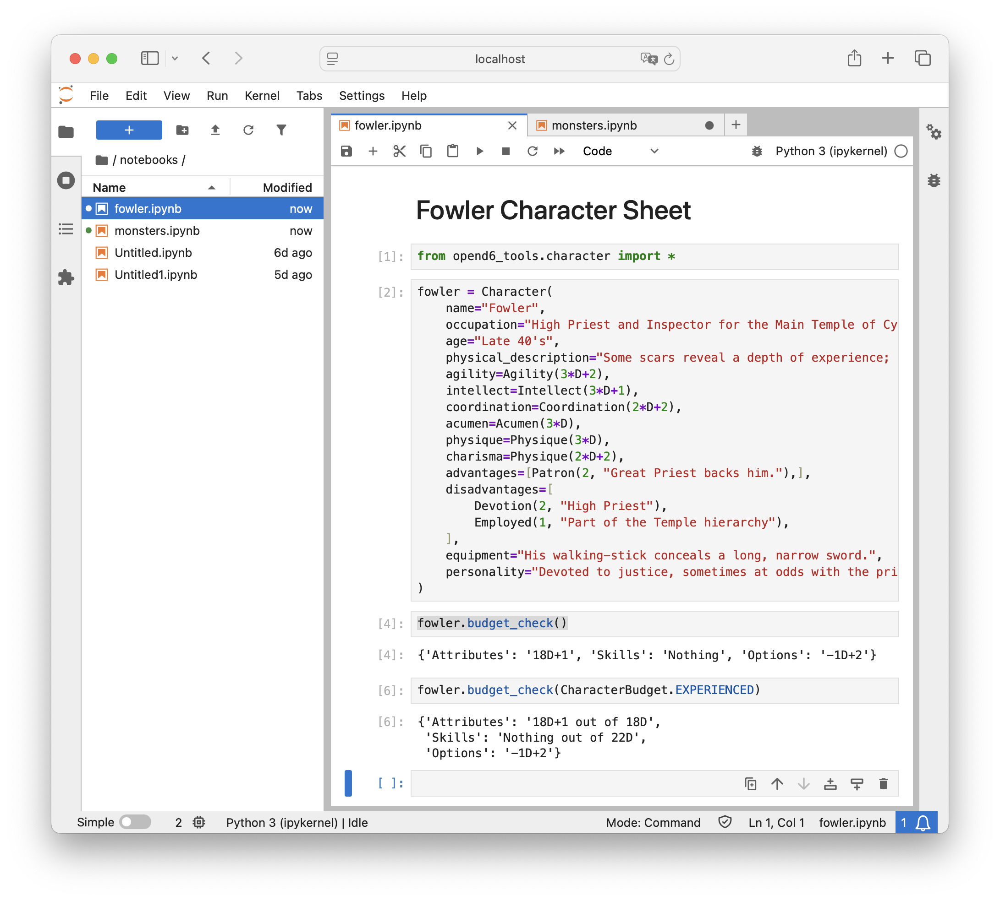
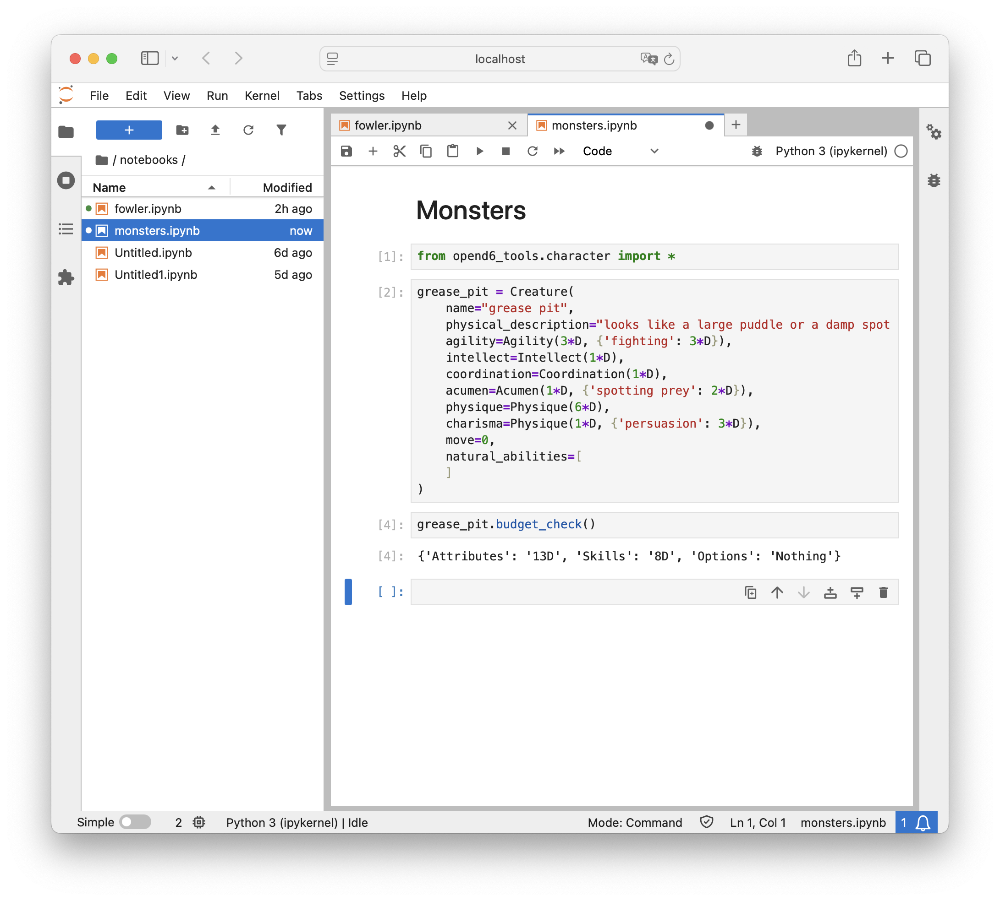

The Character DSL¶
It’s time to look at how we can create a number of sections in our campaign document:
We’ll add template characters in the Templates chapter.
We’ll add sample creatures and Characters in the Adventure Tips chapter.
Character descriptions will show up in a few other places, also.
These are in several different chapters, each of which will include character and creature definitions.
The steps in this tutorial will support the Change-Compute-Consider cycle. The Character and Creature definitions use a DSL to support interactive computation. The DSL also supports document publication.
We’ll break this tutorial into several steps.
Adding some chapters for characters and creatures.
Writing a Character definition in a Jupyter Notebook. This will have some background plus the details of putting a few lines of code into a Notebook.
Converting the Notebook to some RST that can be published. This is a multi-step process. We can do it manually, but, it’s done best by configuring the make tool. The idea is that any change made to the Notebook cascades into a change to the final document.
Including the Character’s or Creature’s RST in the appropriate places in various chapters.
Review: Adding a chapter¶
In the Start Writing part of the tutorial, we added some chapters. We’ll repeat the overview of the steps again because – for a lot of folks – this is a new and different way to create.
Character details are often found in several places:
In an Introduction chapter that describes the game in general, there will be a detailed character sheet.
In an Adventure Tips chapter will have short descriptions of generic characters.
The Non-Human Races chapter will have long descriptions of some character types. These have a middle level of detail – more than the summaries of generic characters, but not full character sheets.
In a Templates chapter will have full character sheets for a number of characters.
Creature details are often confined to several sections of an Adventure Tips chapter along with generic characters.
Let’s look closely at writing an Adventure Tips chapter, since it includes both characters and creatures.
Create a new
.rstfile for the chapter. We might create a file namedadventure_tips.rst.Put the title in the chapter. The first two lines of the
adventure_tips.rstfile can beAdventure Tips ==============
This chapter will have a number of topics.
Creating Adventures ------------------- Ideas. Running Adventures ------------------ Suggestions. Rewarding the Players --------------------- Guidelines. Generic People -------------- Introduction. Include a list of characters. Generic Animals --------------- Introduction. Include a list of creatures. Generic Monsters --------------- Introduction. Include a list of creatures.
Some designers find it helpful to have an outline. Details can be filled in later.
The idea to replace these generic Include a list... constructs with actual character and creature details.
Update the
.. toctree::directive inindex.rstto include the name of the new file. Just include the stem of the name,magicnot the entire name.
At this point, we can run the following make command to see the work in process:
make html
This will regenerate the HTML so we can be see our new, empty chapter.
Introduction to Character definition¶
The domain-specific language for characters (and creatures) uses Python syntax. Here’s an example.
from opend6.character import *
hero = Character(
occupation="Aspiring Hero",
race="Human",
agility=Agility(
3 * D + 1,
{
"acrobatics": 0,
"climbing": 0,
"dodge": 0,
"fighting": 0,
"flying": 0,
"jumping": 0,
"melee combat": 0,
"stealth": 0,
},
),
intellect=Intellect(
2 * D + 2,
{
"cultures": 0,
"healing": 0,
"navigation": 0,
"speaking": 0,
"trading": 0,
"traps": 0,
},
),
coordination=Coordination(2 * D + 2, {
"marksmanship": 0,
"throwing": 0
}
),
acumen=Acumen(
3 * D + 1,
{
"crafting": 0,
"hide": 0,
"investigation": 0,
"know-how": 0,
"search": 0,
"streetwise": 0,
"survival": 0,
"tracking": 0,
},
),
physique=Physique(
3 * D,
{
"lifting": 0,
"running": 0,
"swimming": 0,
"stamina": 0
}
),
charisma=Charisma(
3 * D,
{
"charm": 0,
"intimidation": 0,
"mettle": 0,
"persuade": 0
}
),
equipment="Dagger (damage +1D); leather jerkin (Armor Value + 2); shoulder bag with cheese, bread, and silver coins in it",
description=dedent("""\
Always fascinated by the traveling sword-showmen that came through
your little village, you practiced mimicking their techniques (in between your chores
- and sometimes as part of them). Perhaps inheriting wanderlust from your uncle, you
have set on to find your fortune in the larger world and maybe gain fame by helping a few
people along the way"""),
)
The from... line adds the Character DSL to the names Python recognizes.
The tools need to see a Character definition in an assignment statement.
A name = Character() statement has a variable name, name, and an object definition. The = is required.
The variable name is limited to letters, digits, and _, and it must start with a letter.
It’s helps to make the variable name an echo of the occupation (for generic characters) or the character’s name (for important, named characters.)
Python variable names constraints mean the variable name may not precisely match the character occupation or name.
For example, character names can have spaces, variable names can’t; use _ instead of spaces in the variable name: aspiring_hero = Character(occupation="Aspiring Hero", ...).
In the example above, aspiring_hero was the variable name used.
The OpenD6 Rules list the six essential attributes for a character, plus an optional seventh.
However, a character is often described by numerous additional details.
Here’s a run-down of what a Character can contain.
- name:
Any name.
- occupation:
Any text.
- race:
Any text.
- gender:
Any text.
- age:
Any text can be here. This is descriptive text, it is not tied to the Age disadvantage.
- height:
Any text, usually a number in cm. For example:
Female humans: 155 + Physique roll
Male humans: 169 + Physique roll
- weight:
Any text, usually a number in kilograms. For example:
Female humans: 48 + 3 × Physique roll
Male humans: 70 + 2 × Physique roll
- physical_description:
Any text.
- agility:
A
opend6_tools.character.Agilityobject. This is given a base Die Code for Agility in general, followed by a{}-wrapped of specific skills and any additional value. The available skills are:acrobatics,climbing,``contortion``,dodge,fighting,flying,jumping,melee combat,combat,riding,stealth.- intellect:
A
opend6_tools.character.Intellectobject. It has a base Die Code, followed by{}-wrapped skills and die codes. The skills are:cultures,devices,healing,navigation,reading/writing,scholar,speaking,trading,traps.- coordination:
A
opend6_tools.character.Coordinationobject, with a base Die Code, followed by{}-wrapped skills and die codes. The skill names:charioteering,lockpicking,marksmanship,pilotry,sleight of hand,throwing.- acumen:
An
opend6_tools.character.Acumenobject. Skills:artist,crafting,disguise,gambling,hide,investigation,know-how,search,streetwise,survival,tracking.- physique:
A
opend6_tools.character.Physiqueobject. Skills:lifting,running,stamina,swimming.- charisma:
A
opend6_tools.character.Charismaobject. Skills:animal handling,bluff,charm,command,intimidation,mettle,persuasion.- extranormal:
Optionally, a
opend6_tools.character.Magicor anopend6_tools.character.Kiraclesobject.Magic skills:
alteration,apportatio,conjuration,divination.Miracle skills:
divination,favor,strife.
- advantages:
An optional list of
opend6_tools.character.Advantageobjects. Object class names include:Authority,Contacts,Cultures,Equipment,Fame,Patron,Size,TrademarkSpecialization,Wealth. All advantages are described by a rank and details.- disadvantages:
An optional list of
opend6_tools.character.Disadvantageobjects. Classes include:AchillesHeel,AdvantageFlaw,MinorStigma,Age,BadLuck,BurnOut,CulturalUnfamiliarity,Debt,Devotion,Employed,Enemy,Hindrance,Infamy,LanguageProblems,LearningProblems,Poverty,Prejudice,Price,Quirk,ReducedAttribute. All disadvantages are described by a rank and details.- special_abilities:
An optional list of
opend6_tools.character.SpecialAbilityobjects. There are a lot of these:AcceleratedHealing,Ambidextrous,AnimalControl,ArmorDefeatingAttack,AtmosphericTolerance,AttackResistance,AttributeScramble,Blur,CombatSense,Confusion,Darkness,Elasticity,Endurance,EnhancedSense,EnvironmentalResistance,ExtraBodyPart,ExtraSense,FastReactions,Fear,Flight,GliderWings,Hardiness,Hypermovement,Immortality,Immunity,IncreasedAttribute,InfravisionUltravision,Intangibility,Invisibility,IronWill,LifeDrain,Longevity,LuckGood,LuckGreat,MasterOfDisguise,MultipleAbilities,NaturalArmor,NaturalHandWeapon,NaturalMagick,NaturalRangedWeapon,Omnivorous,ParalyzingTouch,PossessionLimited,PossessionFull,QuickStudy,SenseOfDirection,Shapeshifting,Silence,SkillBonus,SkillMinimum,Teleportation,Transmutation,UncannyAptitude,Ventriloquism,WaterBreathing,YouthfulAppearance,NaturalAbility. All special abilities are described by a rank and details.- equipment:
Any text
- description:
Any text (Yes, this can be redundant, see
physical_descriptionabove.)- realm:
Any text. This defaults to ‘Human realm’ if nothing is provided.
- move:
The movement in meters per round. This default to 10 if nothing is provided.
- strength_damage:
This is generally computed from the lifting skill of the Strength attribute. A value can be provided, to override the automatic computation.
- body:
This is generally computed from the Physique attribute via a die roll. A value can be provided, to override the automatic computation.
- wounds:
An automatically computed mapping of wound level names and ranges of body points.
- funds:
This is generally computed from the Charisma attribute via a die roll. It’s the base dice roll to purchase equipment.
- silver:
This is computed from the funds. It’s an equivalent to the funds die roll in silver coins.
- fate_points:
The number of fate points.
- character_points:
The number of characte points.
- personality:
Any text
- objectives:
Any text
- native_language:
Any text
- other_notes:
Any other text that doesn’t have a home in the object definition.
A number of computations are part of this.
- attributes:
The sum of the dice (and pips) to purchase the core 6 (or 7) attributes.
- skills:
The sum of the additional dice (and pips) scattered around in the skills.
- options:
The sum of additional dice (and pips) used to purchase advantages and special abilities, reduced by the dice for disadvantages. This is the net cost of those three sets of character options.
Step 1: Activate the virtual environment¶
Each time we sit down to a Terminal window (or Powershell prompt) we’ll need to make sure our virtual environment is active. The OS prompt should provide hints as to what environment is active. There are two parts to this:
The current working directory. The book directory,
campaign_bookneeds to be current. If the prompt doesn’t show the directory, there are OS commands to print the working directory:pwd(or Windowscd).If the directory isn’t correct, use the
cd(orchdir) command to navigate to the correct working directory.The virtual environment. If the prompt starts with
(my-book)then the virtual environment is active. Nothing more needs to be done.If the virtual environment isn’t active, use one of the following commands to activate it.
source .venv/bin/activate
For Windows the command is slightly different.
.venv\Scripts\Activate.ps1
The prompt will have a prefix of (my-book) as a reminder that the virtual environment is now active.
Step 2: Start Character and Creature Notebooks¶
Look back at the OpenD6 Tools tutorial.
If you have a starting notebook still open, close the open tab by clicking the × on the tab for the notebook.
Generally, we expect to be looking at a Launcher in the center panel.
If not, the big + button on the File Browser panel will create a Launcher panel.
Step 2a: Character Notebook¶
In the launcher panel, under the “Notebook” banner, click the Python 3 (ipykernel) icon to create a new Notebook in the notebooks folder.
Do the following things in this new character notebook.
Change the first cell’s type from
CodetoMarkdown. Put in a summary of the notebook – something about an exercise to define a Character and learn the Character DSL.Add a second cell with the following line of code.
from opend6_tools.character import *
This will import the Character-centric DSL to the notebook.
Execute the cell with the
 icon at the top of the panel.
icon at the top of the panel.In the next cell, put in a Character definition.
fowler = Character( name="Fowler", occupation="High Priest and Inspector for the Main Temple of Cyþan", age="Late 40's", physical_description="Some scars reveal a depth of experience; plenty of muscle to back up his words", agility=Agility(3*D+2), intellect=Intellect(3*D+1), coordination=Coordination(2*D+2), acumen=Acumen(3*D), physique=Physique(3*D), charisma=Physique(2*D+2), advantages=[Patron(2, "Great Priest backs him."),], disadvantages=[ Devotion(2, "High Priest"), Employed(1, "Part of the Temple hierarchy"), ], equipment="His walking-stick conceals a long, narrow sword.", personality="Devoted to justice, sometimes at odds with the priests trying to maintain order within the temple." )
Execute the cell with the
icon at the top of the panel.Add the following to see the computed budget values for attributes, skills, and options. (The empty
()are required.)fowler.budget_check()
Execute the cell with the
icon at the top of the panel.Here’s what the notebook looks like:

Jupyter Notebook with an example character.¶
Be sure to rename the notebook to a valid name. (Use only ower-case letters, digits, and
_.) The rest of the tutorial assumes it’s calledfowler. If you pick a more meaningful name, be sure to use the name you picked.Be sure to save the final version.
The computations are (almost) immediate and don’t require punching numbers into a calculator.
Here’s what it shows; which reveals a number of interesting problems:
Attributes 18D+1
Skills
Options -1D+2
First, this character is only slightly above the standard budget for starting characters. The rules state the attributes can total 18D. This is an experienced character, and it would make sense to have a few points of experience to boost the attributes.
Second, this character has no skills. A starting character should have 7D of skills. An experienced character may have at least twice this value, perhaps as much as 21D of skills. More work needs to be done on this detail.
Finally, the options dice is a weird-looking negative number. This means the disadvantages outweigh the advantages plus special abilities. This suggests more work needs to be done here, also.
After some careful consideration, this character needs changes. Which means recomputing the totals and reconsidering the design.
Feel free to iterate until the character looks more experienced, more skillful, and has advantages or special abilities that outweigh the disadvantages.
Step 2b: Creature Notebook¶
Return to a launcher panel. In some versions of Jupyter Lab, the Launcher tab is still visible. In some versions, it’s not visible.
If a tab for the Launcher is visible, select it.
If there’s no tab for the Launcher, click the big “+” button on the browser panel. This will add a Launcher tab.
In the launcher panel, under the “Notebook” banner, click the Python 3 (ipykernel) icon to create a new Notebook in the notebooks folder.
Do the following things in this new creature notebook.
Change the first cell’s type from
CodetoMarkdown. Put in a summary of the notebook – something about an exercise to define a Creature and learn the Character DSL.Add a second cell with the following line of code.
from opend6_tools.character import *
This will import the Character-centric DSL to the notebook. This DSL is also used for creatures.
Execute the cell with the
icon at the top of the panel.In the next cell, put in a Creature definition.
Here’s the contents of cell
[2]:grease_pit = Creature( name="grease pit", physical_description="looks like a large puddle or a damp spot on the forest floor; emits a variety of alluring scents.", agility=Agility(3*D, {'fighting': 3*D}), intellect=Intellect(1*D), coordination=Coordination(1*D), acumen=Acumen(1*D, {'spotting prey': 2*D}), physique=Physique(6*D), charisma=Physique(1*D, {'persuasion': 3*D}), move=0, natural_abilities=[ ] )
Here’s the contents of cell
[3]:grease_pit.budget_check()
Here’s what the notebook looks like:

Jupyter Notebook with an example creature.¶
Be sure to rename the notebook to a valid name. (Use only ower-case letters, digits, and
_.) The rest of the tutorial assumes it’s calledmonsters. If you pick a more meaningful name, be sure to use the name you picked.Be sure to save the final version.
Note that the value for natural_abilities is an empty list, the value [].
A creature often have special abilities that are natural, and – consequently – have no cost.
Perhaps Confusion or Invisibility would be appropriate.
The overall budget started with 13D of attributes, and 8D of skills. This is a total of 21D, which slightly weaker than a starting character with 25D.
Here’s the Consider part of this design effort. What’s this creature’s role in the overall world?
A stiff fight? If so, this creature needs an additional 4D of advantages, special abilities, skills, or attributes to make it a challenge for beginning characters.
A common annoyance, easily defeated? If so, this may need to be weakened a bit.
A seriously difficult problem requiring a clever solution? In that case, it seems like a large number of additional dice are needed. Some natural abilities might also be needed.
Feel free to play around with this monster’s definition. Maybe there should be two varieties – smaller and larger?
Step 3: Update the publication pipeline¶
There are several transformations that need be applied to our two notebooks to make them ready for publication. The pipeline will have three stages in it.
Convert the two Notebooks into Python modules.
Run the Python modules as apps to create a RST-format file that can be included into the final document.
As we’ve seen in previous parts of the tutorial, the final document is created by transforming all of the document from RST files to HTML (or PDF or EPUB.)
The final stage of the transformation pipeline is handled by Sphinx’s Makefile.
When we enter the make html command, the make tool takes off and does what needs to be done to create the final document.
Currently, there are two steps, ending in running sphinx-build to do the real work.
We will make a total of three separate changes to expand the publishing pipeline.
Update the Sphinx
Makefileto produce additional files.Add a
characters/Makefileto provide a concrete implementation for steps 1 and 2, convert notebooks to Python modules, and convert Python modules to RST.Update the
adventure_tips.rstdocument in our campaign book. We’ll add.. include::directives to include the generated RST-format files with the character and creature details.
Step 3a – Update the Makefile¶
Open the Sphinx-supplied Makefile.
You’ll see something like this cryptic looking recipe definition around line 19:
%: Makefile
@$(SPHINXBUILD) -M $@ "$(SOURCEDIR)" "$(BUILDDIR)" $(SPHINXOPTS) $(O)
If you did the “Define Spells” tutorial, there should be a $(MAKE) -C spells line.
(If you didn’t do that tutorial, it will look like the above example.)
What does this recipe do? The recipe provides a way to make any target (other than help).
For any name, it will run the given command, $(SPHINXBUILD).
The value of the SPHINXBUILD variable is the actual sphinx-build command.
Change the Makefile to add another new line, $(MAKE) -C characters in addition to the $(MAKE) -C spells added in an earlier tutorial.
It should look like the following:
%: Makefile
$(MAKE) -C spells
$(MAKE) -C characters
@$(SPHINXBUILD) -M $@ "$(SOURCEDIR)" "$(BUILDDIR)" $(SPHINXOPTS) $(O)
The % recipe now has three steps.
Run
makewhile changing the working directory tospells. This will use theMakefileit finds in thespellsdirectory.Run
makewhile changing the working directory tocharacters. This will use theMakefileit finds in thecharactersdirectory.Run the
$(SPHINXBUILD)command to create the final document.
There are now four requirements for this recipe to work.
The project has a folder named
spells.The
spellsfolder has aMakefilein it.The project has a folder named
characters.The
charactersfolder has aMakefilein it.
The The Spell DSL tutorial made sure the first two requirements were met. We’ll make some changes to make sure the last two requirements are satisfied.
Step 3b – add the characters/Makefile¶
The characters/Makefile is not terribly complicated.
It has a bunch of “boilerplate” – standard stuff that won’t change.
It has one line which will change as our document grows and evolves.
1.phony: characters
2
3vpath %.ipynb ../../notebooks
4
5# Create a Python Character or Creature module from a Jupyter Notebook with the same name.
6%.py : %.ipynb
7 python -m opend6_tools.notebook_extract characters $< > $@
8
9# Create an RST text file from a Python Character or Creature module with the same name.
10%.txt : %.py
11 python $< test
12 python $< display --format SHORT > $@
13
14characters : fowler.txt monsters.txt
This Makefile has four separate recipes, and one directive.
We’ll start at the top.
.phony: charactersis a special-purpose recipe to tell the make toolcharactersisn’t really a file.It’s a phony target name.
The
vpathdirective tells the make tool to search for.ipynbfiles in a../notebooksdirectory. The..means navigate to the parent of this directory.The
%.py : %.ipynbrecipe shows how to make a Python module (%.py) from a Notebook (%.ipynb). The use of%means the file stem remains constant. In other words,abc.pywill be created from../notebooks/abc.ipynb.The
%.txt : %.pyrecipe shows how to make an RST-formatted file (%.txt) from a Python module (%.py). The$<is the target module file; which will be executed as an application. The module will be given adisplayargument value. The--format SHORToption tells the module to use the short form for the character or creature. The output willbe collected into the$@target file.The
characters : fowler.txt monsters.txtrecipe provides a concrete definition for the phonycharacterstarget. This defines what will be done in response to themake characterscommand.
What happens when the command make characters is run?
The phony target depends on two concrete files, fowler.txt, and monsters.txt. This means make has two goals.
The %.txt : %.py recipe means an fowler.py file needs to be found and converted, and a monsters.py file needs to be found.
Since these files don’t exist, now make has two more goals.
The %.py : %.ipynb recipe means an fowler.ipynb notebook needs to be found and converted.
It can be found either in the characters directory or – better – in the notebooks directory named in the vpath directive.
Similarly, to create the monsters.txt, a monsters.py is requied.
This can be built from monsters.ipynb, also found in the notebooks directory.
This example assumes the notebooks will be named fowler.ipynb and monsters.ipynb.
If the notebooks have different names, use those names instead of fowler.ipynb or monsters.ipynb.
The name’s stem has to be lowercaes letters, digits, and _. The suffix has to be .ipynb.
The names claimed in the Makefile (fowler and monsters) needs to match the actual name the actual notebooks actually have.
Important
.txt is the suffix for the RST-format file
The suffix of .txt is distinct from the .rst files we created by hand.
We use this suffix to make it invisible to the Sphinx tools.
It’s still RST-formatted spell details.
We want to use .rst for manually-created files because Sphinx will look around in the working directory to be sure all .rst files are part of the current project.
This helps locate spelling mistakes in the .. tocreee:: directives.
The characters : fowler.txt monsters.txt recipe will grow as we add new notebooks.
The rest of the file will remain unchanged.
As new notebooks are created, add the file names to the characters : recipe.
The names go at the end, separated from each other by at least one space.
The final step is to add an .. include:: directives in the adventure_tips.rst chapter of the campaign book.
Step 3b – include the character and creature RST files¶
In our adventure_tips.rst chapter, we might have some text like this.
Here's a list of example characters:
.. include:: characters/fowler.txt
The .. include:: directive tells Sphinx to read the fowler.txt file here.
The RST-formatted version of the fowler.ipynb notebook will be included here in the document.
As noted above, if your actual notebook name is not fowler, change this to match your
actual notebook name.
Similarly, there needs to be an .. include:: characters/monsters.txt in the place where a monster list is presented in the text.
Conclusion¶
We’ve added a section to our book. This section includes character and creatures definitions, which means we’ve done a number of related things.
We’ve used notebooks to define the characters and creatures. This helps us with the Change-Compute-Consider part of design.
We’ve updated the Sphinx
Makefileto build characters.We’ve creaete a
characters/Makefileto build RST-formatted files from the notebooks in which we put our ideas.
As important note is that we can have as many characters or creatures as we want in a single notebook.
They will all wind up in a single RST-format file. They will all wind up in a single RST-format file.
The notebook organization, then, reflects the organization of .. include:: directives in our book.
One master list of all template characters? One big notebook and one big RST file will work.
Separate lists of characters for distinct contexts? This is common because character details show up in many places. It’s also common because creatures are often split into “common” and “uncommon” groups.
The point here is to make sure the organization of the information is reflected in the file structure.
As our thinking evolves, the file names will change.
This means changing the .. include:: directives, as well as the targets in the characters: `` recipe in the ``Makefile.
They RST documents and the Makefiles have to agree on the file names.